우리 하네스를 이렇게 쓴다
이 장은 킷을 설치한 리포에서 일하는 방법을 적는다. 기본은 킷만 쓰는 구성이고, AI-DLC·Entire는 켰을 때 달라지는 점만 따로 적었다. 명령마다 지금은 지금 되는 것, v2는 03장 계획이 끝나야 되는 것이다. v2 명령이 아직 없을 때 같은 일을 손으로 하는 방법도 함께 적었다.
단계별 하네스와 사람의 몫
| 단계 | 세션 · 하네스 | 하네스가 하는 것 | 사람이 하는 것 |
|---|---|---|---|
| 설계 | 설계 · Claude Code(AI-DLC는 켰을 때) | 질문을 내고, 스토리·Unit 분해·기획물 초안을 만든다 | 범위 밖·수치·엣지 케이스에 답하고 Unit과 기획물을 승인한다 |
| 구현 | 구현 · Claude Code | SDD design·tasks를 쓰고 코드·테스트를 만든다. verify.sh가 실패하면 먼저 고친다 | design의 트레이드오프를 고르고 승인한다 |
| 검증 | 리뷰 · Codex, 스캐너 | MR을 리뷰하고 보안·품질 스캔 결과를 해석한다 | 동시성·권한·경계·실패 경로를 보고 MR을 승인한다 |
| 반영 | 문서 · Kiro | 기능 문서·API 문서를 고치고 승인 기록을 남긴다 | — |
| 운영 | 문서 · Kiro, 사람 | 운영 기록을 정리해 다음 요구사항 초안을 만든다 | 배포를 누르고 다음 요구사항을 고른다 |
하네스 배정은 기본값이다. Kiro를 쓰지 않는 팀은 문서 세션도 Claude Code로 돌린다(02장 역할).
새 프로젝트에 깔기
지금 플러그인으로
# Claude Code
/plugin marketplace add <owner>/harness-starter-kit
/plugin install harness-kit@harness-starter-kit
/hx-bootstrap --dry-run # 파일 목록만 본다
/hx-bootstrap # 스택·변형은 리포를 보고 판단하고, 애매하면 묻는다
# Codex: $hx-bootstrap · Kiro: bash install-kiro.sh 뒤 hx-bootstrap 스킬v2 npx로
npx github:<owner>/harness-starter-kit#v2.3.0 init \
--stack=jvm --arch=hexagonal --agents=claude,codex,kiro --yes
npx harness-kit doctor # 배치·버전·역할 점검
npx harness-kit dashboard # 대시보드 열기
# 선택: 원하는 팀만
npx harness-kit add aidlc # 설계 단계를 AI-DLC로. 없으면 설치 명령을 안내한다
npx harness-kit add entire # 구현 하네스에만 대화 기록을 켠다
npx harness-kit remove aidlc # 다시 킷 설계 단계로설치 뒤에는 네 파일을 채운다: .agents/rules/product.md, ARCHITECTURE.md, .agents/rules/structure.md, scripts/verify.sh의 빌드 단계. 그다음 .agents/harness-kit.json과 .lock까지 첫 커밋에 넣는다. 자세한 순서는 시작 가이드에 있다.
이미 하네스가 있는 리포
| 리포 상태 | 할 일 |
|---|---|
| 킷 v1로 설치됨 | 지금 /hx-update --dry-run → 승인 → 적용 → .new 병합. v2 doctor → update --dry-run → update(03장 이전 절차) |
| 직접 만든 하네스 | v2 init --adopt. 있는 파일은 모두 사용자 소유로 기록하고 없는 것만 깐다 |
| AI-DLC·Entire가 먼저 깔림 | v2 add aidlc·add entire가 이미 있는 파일을 외부 소유로 등록하고 훅을 병합한다. 지금은 킷 업데이트 때 .claude/settings.json이 conflict로 잡히므로 .new를 손으로 병합한다 |
요구사항 하나를 운영까지

- 요구사항을 받는다 v2설계 세션(Claude Code)에서
/hx-intent로 Intent 문서를 쓰고, AI가 내는 질문에 답하면 스토리와 Unit 분해가 나온다. AI-DLC를 켠 리포는/aidlc로 같은 일을 하고 결과가 같은 Unit 목록으로 옮겨진다. 범위 · Unit 승인 지금은 requirements §1·§2에 목표·범위 밖을 쓰고, 큰 기능은 이슈 여러 개로 나눠 계약을 담은 이슈부터 승인한다. - 기획물을 만든다 v2
/hx-screen-plan·/hx-design-plan·/hx-backlog로 화면기획·디자인기획·백로그를 만든다. 지금은 깔려 있는 스킬(service-planning-agent,ui-ux-pro-max등)을 직접 부르고 결과를 이슈 폴더에 둔다. 기획물 승인 - Unit을 SDD 이슈로 v2
/hx-specify --from-unit <Unit 경로>. 폴더는issues/<Jira 키 또는 킷이 만든 키>-<이름>/이다(v1.1). 지금은bash scripts/new-feature.sh <slug> <name>→/hx-specify로 같은 내용을 옮긴다. requirements 승인 - 설계와 작업 분해 지금구현 세션에서
/hx-plan→ design 승인 →/hx-tasks. 필요하면/hx-analyze로 세 문서의 정합성을 본다. - 구현 지금구현 세션이 하나면 메인 폴더에서 기능 브랜치로 일한다. 같은 리포에 쓰는 세션이 이미 있으면
wt new <이슈키>(v2)로 리포 옆 worktree에서 일한다./hx-implement. Bolt(작업 묶음) 하나가 끝날 때마다bash scripts/verify.sh(바꾼 기능만), MR 올리기 전에--affected(v1.1). 전체 검증은 CI가 돌고 에이전트는 돌리지 않는다. - 검증 v2리뷰 세션(Codex)이
/hx-review와/hx-scan으로 MR을 본다. 구현 세션이 지적을 처리하고review.md로 정리한다. 지금은 Codex 세션에서 킷reviewer역할로 diff와 SDD를 대조하고, 깔려 있는security-review·code-review스킬을 쓴다. MR 승인 - 반영 지금병합 뒤 문서 세션이
/hx-docs로 기능 문서를 고치고, 남은 일은/hx-converge로 tasks에 다시 적는다. worktree는wt done(v2) 또는git worktree remove로 지운다. - 운영 기록 v2배포 뒤 지표와 장애를 운영 기록에 적고, 거기서 다음 요구사항 초안을 만든다. 지금은
tech-debt-tracker.md에 적는다.
세션 배치
리포 하나에서 기능 둘을 동시에 진행하는 날의 예다.
| 세션 | 하네스 | 폴더 | 쓰는 것 |
|---|---|---|---|
| 구현 A | Claude Code | my-api/ 메인 폴더, feat/PROJ-12-login | 코드 · 테스트 · SDD |
| 구현 B | Claude Code | my-api.worktrees/PROJ-15-token-expiry/ | 코드 · 테스트 · SDD |
| 설계 | Claude Code | my-api.worktrees/INT-8-plans/(--docs, 문서 폴더만) | Intent · Unit 목록 · 기획물 |
| 리뷰 | Codex | my-api/에서 원격 브랜치 diff만 읽는다 | MR 코멘트 · 로컬 보고서 |
| 문서 | Kiro | 병합 뒤 메인 폴더(구현 A가 끝난 뒤) | 기능 문서 · 승인 기록 |
Entire를 켰으면 구현 세션 둘(구현 A·B)만 대화가 기록된다. AI-DLC를 켰으면 설계 세션이 /aidlc를 쓴다.
- 같은 리포에서 동시에 쓰는 세션은 3개까지로 시작한다(제안값). 검수 대기 MR이 쌓이면 줄인다. 세션이 늘면 사람이 따라가야 할 맥락이 AI보다 먼저 부족해진다(채널톡 사례).
- 사람이 승인하는 자리는 단계마다 있다(05장). 일이 작으면 문서를 짧게 쓰고, 승인은 건너뛰지 않는다.
- 세션을 마칠 때
wt done. 주 1회wt gc로 목록을 보고 사람이--apply를 정한다. - IDE에서는 VS Code의 Source Control → Worktrees, IntelliJ의 Git 창 → Worktrees 탭, 또는
wt open <이슈키>로 연다. submodule 리포처럼 IDE가 못 보여 줄 때는 대시보드 작업 공간 탭에서 본다.
대시보드 쓰는 법 v2
- 연다리포에서
npx harness-kit dashboard. 터미널에 나온 로컬 주소를 브라우저로 연다. - 처리할 일부터맨 위 목록이 승인 대기 문서, 열린 CRITICAL·HIGH, 미해결 질문, 정리 대기 worktree다. 하루를 여기서 시작한다.
- 진행Intent → Unit → SDD 이슈의 단계와 맡은 하네스를 본다. 멈춘 이슈가 어느 승인에서 기다리는지 보인다.
- 문서기획물, SDD 세 문서, 기능 문서, ADR을 파일 경로를 몰라도 바로 연다.
- 고쳐서 요청문서 화면에서 고쳐 저장하고, 맡길 세션을 고른다. 켜 둔 Claude 세션이 요청을 받아 일을 시작한다. 세션이 없으면 새 세션을 여는 링크가 뜬다.
- 승인승인 버튼을 누르면
approvals.md에 내 이름·시각·문구가 남는다. - 공유
dashboard --export <폴더>로 만든 정적 HTML을 MR이나 팀 공간에 올린다. 스킬 탭은 빠진다.
내 스킬 쓰는 법
지금 이 컴퓨터에는 Claude 사용자 스킬 221개, ~/.agents/skills 156개, Kiro 스킬 143개와 플러그인 스킬이 있다. 단계마다 쓸 만한 것을 직접 골라 부른다.
| 단계 | 이 컴퓨터에 깔린 스킬 예 |
|---|---|
| 설계 | service-planning-agent(기획서·IA·화면 정의서), pm-execution:create-prd, pm-execution:user-stories, ui-ux-pro-max, impeccable |
| 구현 | superpowers:test-driven-development, mattpocock-skills:tdd, 스택별 패턴 스킬 |
| 검증 | security-review, code-review:code-review, gstack-review, gstack-qa |
| 반영 | gstack-document-release, claude-md-management:revise-claude-md |
| 운영 | gstack-canary, gstack-retro |
v2 npx harness-kit skills --stage 설계가 이 단계에서 쓸 수 있는 내 스킬과 쓸 수 있는 하네스를 보여 준다. 킷 명령(/hx-screen-plan 등)은 스킬 지도(.agents/skill-map.json)에서 깔린 스킬을 찾아 쓰고, 없으면 킷 템플릿을 쓴다. 지도에 없는 스킬을 단계에 연결하려면 그 파일에 한 줄을 더한다.
여러 리포에 걸친 기능
지금 multi-harness 모듈과 두 단계 커밋을 쓴다. 도메인 리포에서 커밋·push한 뒤 상위 리포에서 포인터를 올려 커밋하고, 리포마다 같은 브랜치 이름을 쓴다.
v2 순서를 정한다(P24).
- 계약 확정리포 사이에 오가는 API·이벤트를 상위 리포의 계약 이슈로 먼저 승인한다. 계약 승인
- 리포마다 병렬도메인 리포마다 구현 세션을 하나씩 둔다. 리포가 다르면 worktree 없이 각자 폴더에서 동시에 일한다.
- 경계 검증상위 리포에서 계약 테스트와 submodule 점검을 돌린다.
- 순서대로 커밋제공하는 리포 → 소비하는 리포 → 상위 포인터 순으로 커밋하고 상위 SDD 목록의 SHA 열을 채운다.
설계 단계: 킷만 · AI-DLC
설계 단계만 두 방법 중 하나를 고르고, 그 뒤는 같다. 설정은 harness-kit.json의 flow.design이고 기본은 kit이다. AI-DLC 용어는 핸드북 01장에 있다.
| 자리 | 킷만(기본) | AI-DLC를 켰을 때 |
|---|---|---|
| Intent · 질문 · 스토리 | /hx-intent, 질문 파일, EARS 수용 기준 | AI-DLC 설계 단계(/aidlc) |
| Unit 분해 · 의존 순서 | /hx-intent가 Unit 목록을 쓴다 | AI-DLC Unit을 킷 어댑터가 같은 형식의 목록으로 옮긴다 |
| 기획물 | 킷 /hx-screen-plan · /hx-design-plan · /hx-backlog(설치된 스킬 활용). 두 경우 같다 | |
| 구현 · 검증 · 반영 · 운영 | 킷 SDD, verify.sh, 자체 리뷰, 스캔, 문서 반영, 운영 기록. 두 경우 같다 | |
AI-DLC를 쓰다 끄려면 npx harness-kit remove aidlc. 킷이 병합한 훅과 등록만 빠지고 AI-DLC가 만든 문서는 남는다. 이미 만든 Unit 목록과 SDD 이슈는 그대로 이어서 쓴다.
Entire를 켤 때
에이전트가 만든 코드의 "왜"를 나중에 추적해야 할 때 켠다. 리뷰에서 근거를 확인하거나 장애 원인을 찾을 때다. 구현 하네스에만 켠다. 끈 상태에서는 대화 원문이 남지 않고, 추적은 SDD 문서 · 커밋 메시지 · MR 링크와 인수인계 문서로 한다.
| 킷 | Entire |
|---|---|
| tasks 작업 하나 완료 → 커밋 | 커밋 하나 = 체크포인트 하나, Entire-Checkpoint 트레일러 |
| MR 본문의 SDD 링크 | 같은 칸에 체크포인트 ID |
| 리뷰 · 장애 분석 | entire why <파일:줄>, entire checkpoint explain <id> |
켜기 전에 세 가지
- 원격이 공개 저장소면 대화 원문이 공개된다. 기록을 올리지 않거나 별도 원격을 쓴다.
- 같은 폴더에서 기록되는 세션이 둘이면 기록이 섞인다. 구현 하네스에만 켜고, 구현 세션이 둘이면 worktree로 나눈다.
- 0.x라 저장 방식과 명령이 바뀐다. 팀이 같은 버전을 쓴다.
지금도 손으로 켤 수 있다: entire enable 뒤 entire agent add claude-code. 킷 업데이트 때 .claude/settings.json이 conflict로 잡히면 킷 훅 변경을 손으로 병합한다.
GitLab · Sourcetree에서
- gitlab.com 리포에서도 기록과 push가 된다. 체크포인트는 일반 git ref로 코드와 함께 올라간다.
- GitLab 프로젝트 설정 → Merge requests → Squash commit message template을
%{title} (%{reference})다음 줄에%{all_commits}로 바꾼다. 기본값은 커밋 본문을 버려서 체크포인트 연결이 끊긴다. - 기록을 다른 리포에 두려면
entire configure --checkpoint-remote gitlab:<그룹>/<리포>(v0.11.0+, gitlab.com만). - entire.io에서 체크포인트를 보는 화면은 GitHub 전용이다. GitLab 리포는
entire checkpoint explain <id>나 대시보드(v2)로 본다. - Sourcetree로 커밋해도 git 훅이 돈다(훅이
entire를 절대 경로로 부른다). 처음 한 번 커밋 메시지에Entire-Checkpoint트레일러가 붙는지 확인한다.
팀 도입 순서
| 시기 | 할 일 | 다음으로 넘어가는 신호 |
|---|---|---|
| 지금 | SDD 세 문서와 verify.sh로 기능 하나를 끝까지 한다. 리뷰를 Codex 세션으로 따로 돌려 본다 | MR마다 SDD 링크와 리뷰 기록이 있다 |
| v2.0 | 새 리포는 npx … init. 기존 리포는 doctor만 | doctor --check exit 0 |
| v2.1 | 동시 구현을 wt 명령으로 | 섞인 커밋 0건, 끝난 뒤 남은 worktree 0개 |
| v2.2 | 대시보드로 하루를 시작한다. 스킬 지도를 팀 스킬에 맞게 고친다 | 문서를 파일 경로로 찾는 일이 없어진다 |
| v2.3 | 킷 설계 단계(/hx-intent)와 기획물로 큰 기능 하나를 끝까지 한다. 역할을 나눈다 | 요구사항 하나가 Intent → Unit → 기획물 → SDD 이슈까지 대시보드에서 이어진다 |
| v2.4 | 원하는 팀만 AI-DLC·Entire 모듈을 켠다. Entire는 첫 1주 기록만 | 다른 도구의 훅·파일이 킷 업데이트 뒤에도 그대로다. 끄면 킷만 구성으로 돌아간다 |
| v2.5 ~ v2.6 | 검증 확장, 반영·운영 기록을 차례로 켠다 | 요구사항 하나가 MR → 운영 기록까지 이어진다 |
무엇을 재나
바꾸기 전에 기준값을 잡는다. 수치는 git·로그·기록 파일에서 뽑고, 자기 보고로 받지 않는다.
| 지표 | 어디서 | 왜 |
|---|---|---|
| 이슈당 사람 개입 횟수 | approvals.md, MR 수정 요청 | 세션을 늘리면 오히려 늘 수 있다(채널톡 사례) |
| 리뷰 · 스캔 지적 수(심각도별) | 리뷰 보고서, SARIF | 스펙·규칙이 구현 전에 충분했는지 보여 준다 |
| 요구사항 → 병합 리드타임 | Intent 생성 커밋 → 병합 커밋 | 견적에 쓰는 수치 |
| MR 크기 | git diff --stat | 작은 배치일수록 AI 도입 효과가 커진다(DORA 2025) |
| 남은 worktree 수 · 용량 | wt list, 대시보드 | 97개·109GB 재발을 막는다 |
| 상시 컨텍스트 크기 | doctor | 세션 비용은 세션에 실린 토큰 양으로 정해진다 |
시작 전 점검표
- 전체 검증은 CI(야간·릴리스 전)에서 돌고, 로컬은 changed와 affected까지만 돌린다.
- 보호 경로와 비밀값 가드가 켜져 있다. 원격에서 base 브랜치 직접 push가 막혀 있다.
- 역할별 하네스 배정을 팀이 안다. 쓰는 하네스가 모두 같은 규칙 원본을 읽는다(
doctor). - worktree 자리(
<리포>.worktrees/)와 끝의 정의를 팀이 안다. - 무엇을 승인으로 보는지 합의했다. 채팅에서 한 말은 어떤 말이든 승인이 아니다. 승인은 사람 터미널의
harness-kit approve, 관리 페이지 승인 버튼, Jira에서 사람이 한 승인 전이로만 하고, 그때 넣은 문구가approvals.md에 승인과 함께 남는다. - Entire를 켠다면 원격 공개 여부를 확인했다.